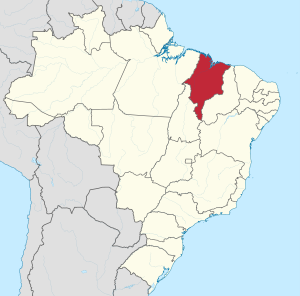

A Coroa Portuguesa decidiu criar a Companhia de Comércio do
Maranhão em 1682. Essa era a fórmula daquela época para o desenvolvimento das regiões que os europeus colonizaram com estes objetivos: o sistema de estanco a ser monopolizado, que teve o privilégio garantido para o comércio de produtos primeiramente necessários; a compra exclusiva e obrigatória de toda a produção do estado; e o fornecimento comprometido de escravos vindos da África, mais adequados para a dureza atarefada da agricultura em terras de clima equatorial, como forma de compensação proibitiva da caça ao indígena. Mas a estratégia não surtiu efeito, ou seja, houve a degeneração do sistema: para a compra, o pagamento do indivíduo que representava a companhia era muito barato. Transformou-se indignação em revolta. O mais importante líder do movimento foi Manuel Beckman. Beckmann nasceu em Lisboa. Seu pai era alemão e sua mãe portuguesa. A profissão de Beckmann era a de senhor de engenho no Mearim. Consta que foi assinado pelos conspiradores um papel em círculo. O objetivo desse documento era para que ninguém houvesse o direito de acusação contra algum deles por liderar o motim. Foi confundida por Beckmann a liberdade instintiva do comércio com o preconceito feroz contra o escravo: a vulnerabilidade era do ameríndio vitimado. A prisão doméstica do capitão-mor Baltasar Fernandes estava perante a custódia da esposa. Em seu colégio, ficou a incomunicabilidade do jesuítas. O fechamento das entradas do estanco armazenado foi definitivo. Não era desejo da Junta dos Três Estados (clero, nobreza e povo) a independência. Naquela época essa junta já estava constituída. O governo colonial do Brasil enviou Tomás Beckman ao reino de Portugal.